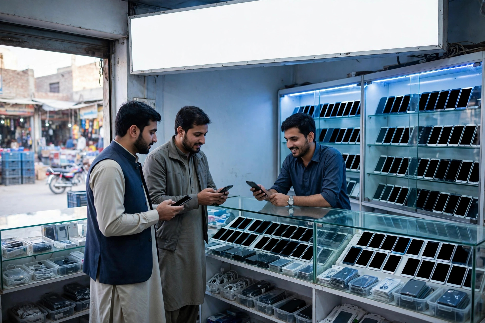
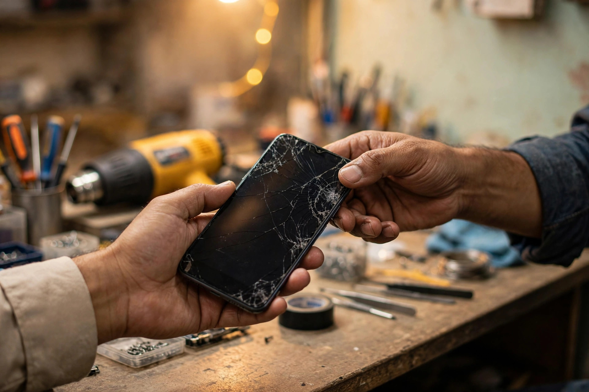

Few purchases in Chobara are as urgent as a phone problem. For many people the phone is how they speak to family, run a small business, receive work and manage money. When it breaks, the owner does not plan a shopping trip for next week. He searches immediately, often from a borrowed phone, and visits the first repair shop that looks genuine and reachable.
That urgency makes SEO especially valuable for mobile shops, electronics sellers and repair services. This guide covers the searches, the profile and the pages that turn a fault into footfall. Support is described on our SEO services for Chobara page. Zaheer Seo Expert is based in Layyah and has no office in Chobara. Chobara shops are served from Layyah, online and by phone, so distance is not a barrier.
How Urgent Searches Differ From Normal Shopping
A customer buying a new phone may compare shops over several days. A customer with a broken phone compares in minutes. The search is usually built from the fault itself: screen, battery, charging, software problem or water damage, combined with repair and the town, or simply near me. The winning listing is rarely the one with the longest text. It is the one with a clear category, recent reviews mentioning repairs, and a phone number that gets answered.
This also means your opening hours must be true. An urgent searcher who travels to a closed shop will not return, and may leave the kind of review that warns others. Accuracy under pressure is the whole strategy in miniature.

Profile Setup for Repair and Sales
Many mobile shops both sell and repair. Your Google Business Profile should reflect that honestly. Choose the main category that matches the larger part of the business, then add the other service clearly in the services list and description. If repairs are central, words like mobile phone repair belong in your services, supported by photos of the actual repair counter and workspace, not only display shelves.
Add attributes and details customers ask about: whether accessories are stocked, whether used phones are sold if that is genuinely part of the trade, and how customers can reach you on WhatsApp for a quick fault description. Keep the description free of brand claims you cannot support, such as implying official authorisation you do not have. Honest wording protects you with customers and with Google.
Repair Pages Written Around Faults
On your website, organise repair content the way customers think, which is by fault rather than by internal workshop process. Useful pages or clear sections include:
- Screen and display replacement: what the customer should bring, how checking works and how long assessment usually takes, without promising fixed times for every case.
- Battery and charging faults: the common signs, what you test first and when a replacement is likely.
- Software and unlocking help: described carefully and only where the service is legitimate and genuinely offered.
- General electronics repair: if you repair other items, name them honestly rather than implying you fix everything.
Each page should end with the practical step: call or message with the model and the fault for guidance. This structure is standard on-page SEO applied to a repair trade, and it also reduces counter time because customers arrive better informed.

Trust Signals for a Handover Trade
Repair customers hand over a device that holds their photos, contacts and accounts. Trust is therefore the deciding factor after proximity. Reviews that mention honest diagnosis, data kept safe, and a fault explained before charging are powerful because they address that fear directly. Invite reviews after a successful repair and reply to them, as covered in our Chobara reviews guide.
On your pages, explain your process plainly: you check first, you explain the fault and the likely cost before proceeding where possible, and you return the device with the work described. Do not publish invented guarantees. A clear process, stated calmly, reassures more than bold promises, and it matches how a good technician already talks at the counter.
Sales, Accessories and Second Enquiries
Repair visitors often become sales customers later. A person whose old phone was handled honestly remembers the shop when buying a new handset, a charger or a cover. Keep a clear sales page describing the ranges you stock in general terms, without copying model lists that age within weeks. Mention that stock changes and invite customers to call or message for current availability, which is accurate and creates the enquiry at the same time.
Connect the pages sensibly. The repair pages can note that accessories and replacement devices are available in shop, and the sales page can note that repairs are handled on site if they are. This internal linking mirrors the real business, and it is the same joined-up approach described in SEO for Chobara businesses.

Staying Ahead in a Fast-Changing Trade
Phone models change constantly, but customer faults stay remarkably stable: screens, batteries, charging and software. Build your pages around those stable needs, update photos as the shop changes, and keep hours and numbers right. That steady accuracy, repeated month after month, is what keeps a Chobara repair shop visible at the exact moment a stranger nearby needs help most.
Frequently Asked Questions
What do customers search when a phone breaks in Chobara?
Most search for the fault plus repair, or mobile shop plus Chobara or near me. Pages that name common faults in everyday words and show a phone number match these urgent searches best.
Should a repair shop list every brand and model online?
List the main brands and fault types you genuinely handle, and invite customers to call about specific models. A focused, honest list beats a copied list of everything.
Do accessories and new phone sales need separate pages?
If sales are a real part of the business, a separate clear page helps buyers and Google understand the difference between sales and repairs. Keep stock descriptions general and current.
Is Zaheer Seo Expert located in Chobara for this work?
No. Zaheer Seo Expert is based in Layyah and serves Chobara mobile and repair shops from there, online and by phone, so no travel is needed.
Want More Customers From Google?
Call 0327 7350830 or email seozaheer14@gmail.com. Zaheer Seo Expert, Layyah - Rajan Shah Road, Rana Nagar, Chak 116 TDA, Pakistan. Open 24 hours.
Get Your SEO Strategy →